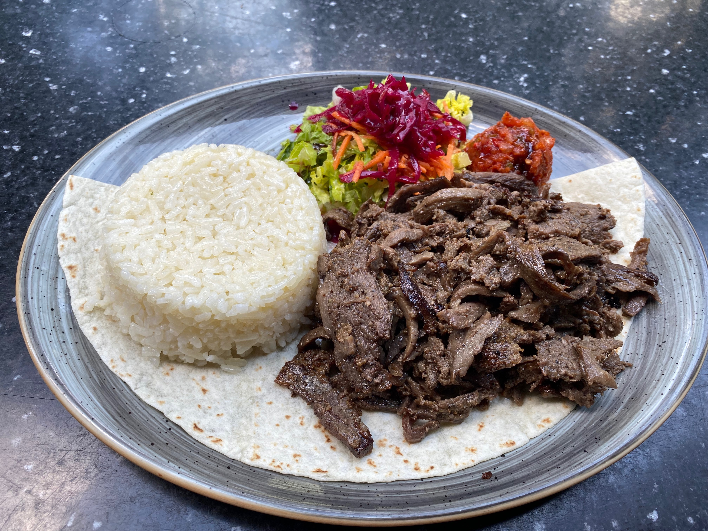
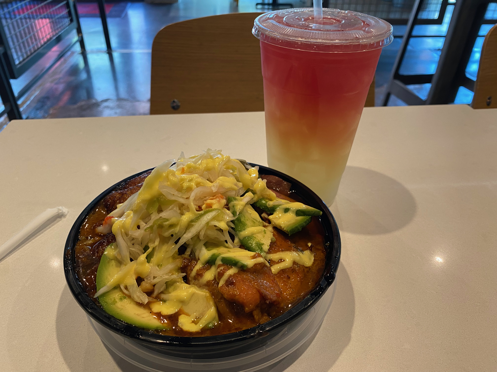

See also: blog | coffee | brews | varia
10. Doherty's Irish Pub and Restaurant, Cary, NC
I walked into Doherty’s for, quite literally, just an outlet. My phone was dead and I didn’t know how to get back on the trail. An hour and some later, I left Doherty’s with a full stomach, a big heart, and a new affinity for fish and chips.
Doherty’s serves classic Irish dishes, some with local twists. The waitress told me that people drive hours for their famous batter-fried fish and chips, and I see why. I recommend a visit if you’re in the area.
9. Charlie was a sinner., Philadelphia, PA
Google labels the restaurant a “Vegan cafe/bar dishing up creative, plant-based small plates & drinks in sexy, dark environs.” I could not be more accurate than this. Spicy, funky cocktails; vegan dishes with creative twists; and excellent, “sexy” energy. I definitely recommend.
8. Agora, Washington D.C.
My friend Cyrus and I had just suffered an expensive weekend at the hands of D.C.’s absurd price gouging prices. He wanted to save money and skip lunch, but I was keen on one more D.C. favorite. I chose the Agora, and will never regret that fact.
Octopus over a bed of sour cream, home-made Kalamata olive oil, and seafood soup were all the hype. They were even worth the money––a statement I feared I would never utter about anything from D.C.
7. Ottoman Taverna, Washington D.C.
The first Michelin-starred restaurant to reach this list, Ottoman Taverna boasts a “Trip to Turkey” on its menu. It’s authentically Mediterranean, and especially worthy of the Michelin (and now Justin) label.
I ordered thinly sliced beef döner kebap, which came with white rice, ezme (turkish salsa), and carrot-red cabbage slaw. A photo may satisfy you more.
6. Hot Chick, Richmond, VA
After I ate at Hot Chick, I was convinced it was going to be the number one restaurant on this list. This restaurant is incredible.
Chick-fil-A, Popeyes, McDonalds, Burger King, Wendy’s, KFC, whatever. Those chicken sandwiches pale in comparison to that from Hot Chick. A crispy brioche bun is the foil to the moist meat, meanwhile ranch slaw and a cold pickle counter the spice. It’s magic.
Their website boasts “BEST DAMN CHICKEN SANDWICH YOU HAVE EVER HAD. PERIOD.” So far, this holds.
5. Talula's Garden, Philadelphia, PA
I mentioned in a blog post that, while walking the streets of Philadelphia, I ran into my friend Abby. I described the dinner to which her parents treated me as follows:
There, I ate one of the best meals I’ve ever had: a tagliatelle and mushroom appetizer, seared sea scallops on lemon risotto, Abby’s leftover pork belly and peaches, and three (!) cocktails, one of which was a spicy passionfruit Mezcal.
Talula's is worth the lofty price tag. More importantly, I learned here that anyone who says they enjoy Old Fashioned’s are lying.
4. La Vara, New York City, NY
The second Michelin-starred restaurant on this list, La Vara is worth all the hype. Small plates (tapas) featuring octopus, mussels, and pureed snap peas led the meal, though I got hit with the shishito pepper curse that makes eating hilariously unpleasant. Seriously––the shishito peppers that are spicy are so gosh darn spicy that I couldn't eat for 15 minutes.
Amazing service, even better food, but try your best to dodge the killer shishito if you can. 5 stars to La Vara.
3. ZZQ, Richmond, VA
I’ll leave it to the experts:
My friend John, a Houston native and barbecue connoisseur, told me that perhaps the best barbecue in the country is not found in Texas, but at Richmond’s ZZQ. Please, go to ZZQ.
2. Sobeachy Haitian Cuisine, Baltimore, MD
I stumbled into Baltimore’s Cross Street Market without much of an agenda. That is, until I saw Sobeachy, and then I made one.
I went up to the chef (his name was Oben) and told him I hadn’t had Haitian food before, but that I often consume its adjacent Trinidadian and Jamaican cuisines. We talked about our respective origins for a bit, and he, without asking, started making me a bowl. Plantains. Avocados. Slaw. Chicken. Pork. He looked up once, only to smile at me and call me my brother. He eventually turned around and prepared me a secret drink, the origins of which he kept from me. See below for a photo.
Delicious food, though I have no idea how one could order what I got. I guess tell him you haven't been to Haiti.
1. Chama Mama, New York City, NY
A former Soviet (and at one point, German) state, the Eastern Asian country Georgia bears a unique cuisine, full of bread, egg, butter, meat, and, ... well, that’s just about it.
The benefit of 1) rolling 10-deep to a restaurant, and 2) having friends who share everything is that we can order the whole menu and not feel so bad about it. We ordered just about everything: open-faced khachapuri with blended cheese and an egg, adjapsandali (vegetable rogue with eggplant and zucchini), chicken and grilled grits, kubdari (a spiced pork pizza-esque dish; also the national dish of the Svans), among many others. The service was impeccable, the dishes were delicious, and the company was superb. In the spirit of the true Michelin Guide, go as far out of your way as you need in order to eat here. Chama Mama is perfect.
A nearby table learned it was my birthday and gifted me a Napoleon, a crispy pastry with creamy patisserie inside. It was the best dessert I’ve ever had.